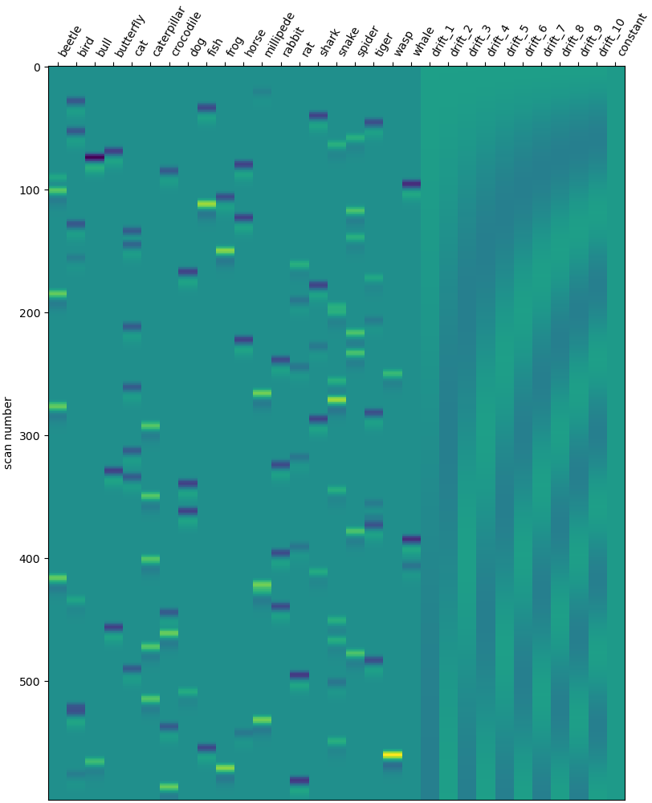
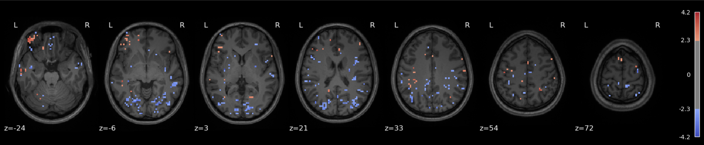
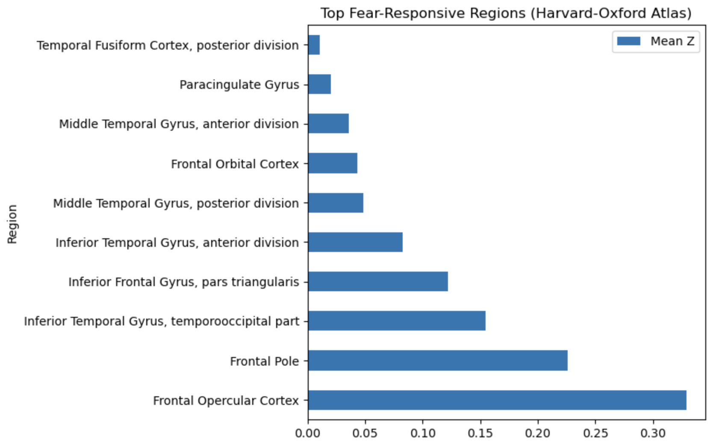
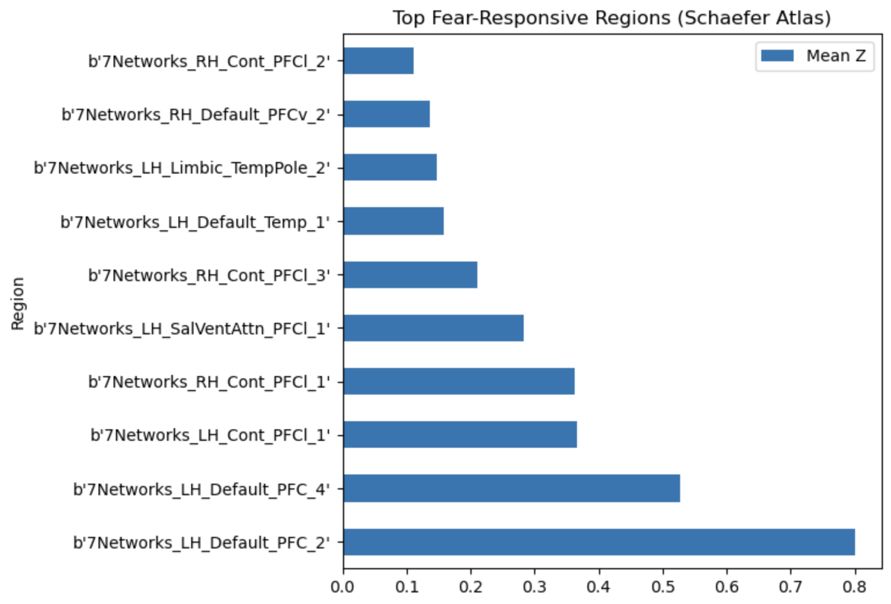
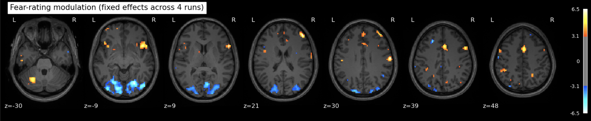
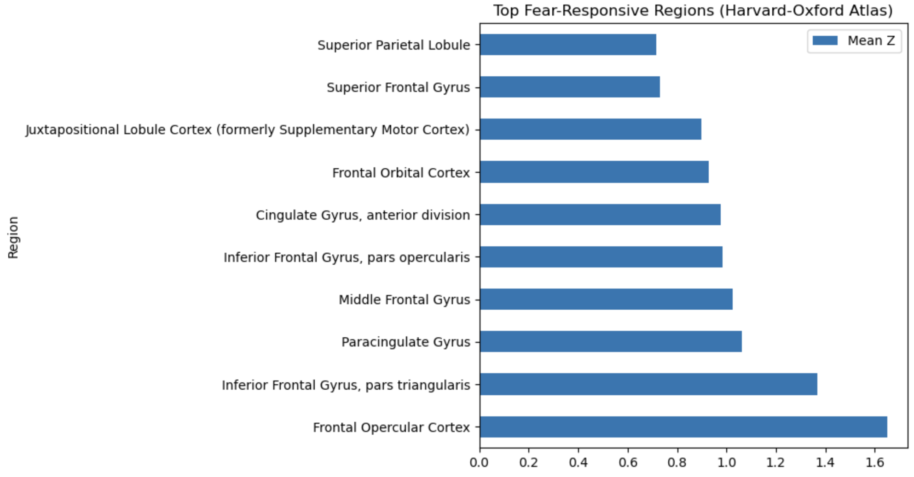
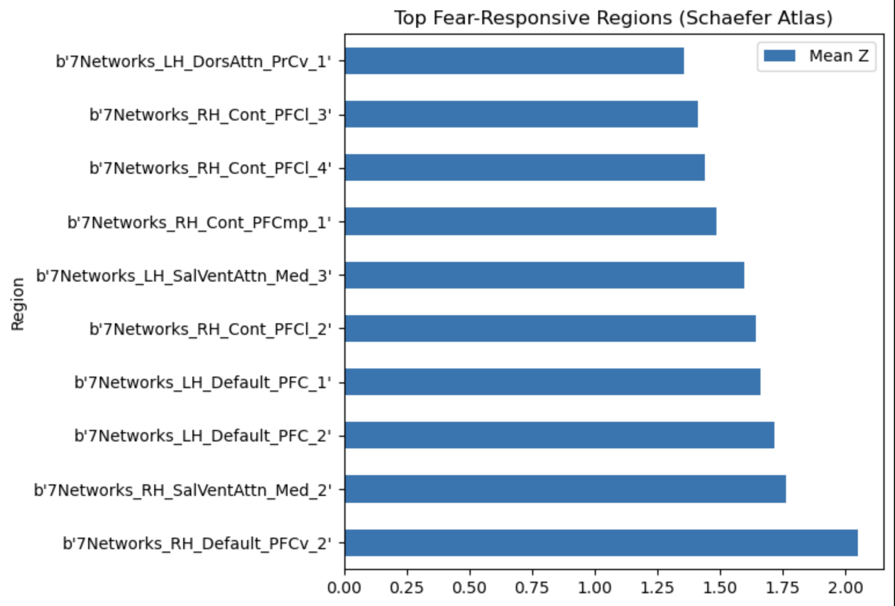

Approach 1 - Univariate#
A mass univariate approach is usually used to determine which parts of the brain respond to a task or stimulus during an experiment.
The brain is parcellated into small volumes, called voxels, and you check them one by one for their association with the construct of interest. What you end up with is a (hopefully!) colorfully spotted map of a brain where spots indicate statistically significant associations.
Attention
This approach often assumes a localizationist view of brain function, that is that certain somewhat circumscribed brain areas do different things. In contrast to a purely anatomical view, one can adopt a functional view, where the complex relations between brain regions are treated as distributed networks that participate in generating/modulating different experiences.
This distinction can seem a bit odd right off the rip, but it will be relevant for interpreting the results of all three approaches individually and colletively (foreshadowing).
For a more in-depth discussion of pro/anti-localizationsim, see Noble et al., 2024.
As we’re working with fear, we’ll hope to rediscover regions such as insula, thalamus, periacqueductal gray matter, locus cerulus, parabrachial nucleus and nucleus of solitary tract, medial frontal gyrus, anterior cingulate, amygdala and hippocampus, hypothalamus and maybe some ventromedial or dorsolateral prefrontal cortex (Lai, 2019).
To do so, we’ll follow these high-level steps:
Load data
Prepare and fit GLM model to data (with parametric modulation)
Compute contrasts
Visualize contrast maps
Use Harvard-Oxford and Schaefer atlases to turn z-maps into a list of brain regions/networks associated with the contrasts
We’ll do this twice, once on a single run and another time on all available runs, i.e. 3 runs.
Single run#
Imports#
import os
import numpy as np
import pandas as pd
import nibabel as nib
from nilearn.plotting import (
plot_anat,
plot_img,
plot_stat_map,
plot_design_matrix,
show,
view_img_on_surf,
)
from nilearn.datasets import (
fetch_localizer_first_level,
fetch_surf_fsaverage,
fetch_atlas_schaefer_2018,
fetch_atlas_harvard_oxford,
load_fsaverage,
)
from nilearn.image import load_img, mean_img
from nilearn.surface import SurfaceImage
from nilearn.glm.first_level import FirstLevelModel, make_first_level_design_matrix
from nilearn.maskers import NiftiLabelsMasker
Loading the data#
To conduct such an analysis, one needs two sources of data: the fMRI-acquired brain_data and the events_data, which describe how the experiment unfolded: i.e. which stimuli were presented when and what their fear rating was.
The category column gets renamed to trial_type, because nilearn expects columns onset, duration, trial_type, and possibly modulation.
We create a modulation column based on the mean-centered fear rating to use in the GLM to modulate or weight each animal category by their fear ratings.
brain_data = nib.load("ManyFaces/derivatives/sub-09/func/sub-09_task-videos_run-1_preproc_space-MNI_bold.nii.gz")
events = pd.read_csv("ManyFaces/events sub-09_ses-01_task-video_run-1_events.tsv")
events = events.rename(columns={"category": "trial_type"})
events["modulation"] = events["rating"] - events["rating"].mean() # Mean centered
print(event.head().to_markdown())
file |
trial_type |
onset |
duration |
rating |
response_time |
rating_order |
button |
modulation |
|
|---|---|---|---|---|---|---|---|---|---|
0 |
millipede_6.mp4 |
millipede |
11.0008 |
3.00808 |
1 |
16.643 |
1 |
2 |
-0.44 |
1 |
bird_20.mp4 |
bird |
17.6436 |
2.99128 |
0 |
21.2684 |
1 |
1 |
-1.44 |
2 |
fish_7.mp4 |
fish |
22.2685 |
2.99186 |
1 |
26.8523 |
1 |
2 |
-0.44 |
3 |
shark_17.mp4 |
shark |
27.854 |
3.00727 |
0 |
31.7698 |
1 |
1 |
-1.44 |
4 |
tiger_14.mp4 |
tiger |
32.7699 |
3.00825 |
0 |
37.7621 |
1 |
1 |
-1.44 |
Prepare design matrix#
TR = 0.867
frame_times = np.arange(fmri_img.shape[-1]) * TR
design_matrix = make_first_level_design_matrix(
frame_times=frame_times,
events=events,
hrf_model="glover"
)
Configure and fit GLM#
# Config model
first_level_model = FirstLevelModel(
t_r=0.867, # taken from
noise_model='ar1',
standardize=True,
drift_model='cosine',
high_pass=0.01,
hrf_model='spm',
)
# Fit model
glm = first_level_model.fit(fmri_img,
events=events,
design_matrices=design_matrix
)
Check design matrix#
design_matrix = glm.design_matrices_[0]
plot_design_matrix(design_matrix)
show()

Compute contrasts#
is_animal_col = ~design_matrix.columns.str.startswith("drift_")
is_animal_col &= design_matrix.columns != "constant"
animal_cols = design_matrix.columns[is_animal_col]
contrast_vec = np.zeros(design_matrix.shape[1])
contrast_vec[[design_matrix.columns.get_loc(c) for c in animal_cols]] = 1 / len(animal_cols)
z_map = glm.compute_contrast(contrast_vec, output_type="z_score")
Plot results#
plot_stat_map(
z_map,
bg_img=anat_img,
threshold=1.7, # Tweak this depending on effect strength, here I'm going low to help me 'see' what's going on
display_mode='z',
cut_coords=7,
title='High Fear > Low Fear',
cmap='coolwarm',
vmax=6.0
)
show()

Checkpoint: What do we see?#
Before drawing any conclusions, let’s summarize what was done and what question is being asked.
We fit a first level GLM to some fMRI data for a single run on a single subject who saw animal videos and rated them on how fear-eliciting they were. Our GLM includes one regressor per animal category which was modulated (or weighted) by the fear rating.
The question being asked by this analysis (specifically, it manifests in the contrasts) is: Which voxels show a linear relationship with subjective fear, irrespective of animal category?
And the answer can come in many forms, such as the map shown above, for instance. Note that a low statistical threshold (threshold = 1.7 ≈ p = 0.05ish (one tailed) or p = 0.09ish (two tailed)) was used to ease visualization of what’s happening and where. However, it’s a bit hard to interpret unless you have extensive experience looking at such maps (in addition to the interpretive difficulties associated with single subject/single run analyses in general).
So another step one can take is to use different atlases, which are pre-computed brain maps with specific labels for different regions, and use those maps to figure out which anatomical structures our colorful blobs fall into.
Here I’m skipping over a lot of detail in how one creates these maps, the different kinds that exist and so on, but the important thing is that there are maps that correspond to anatomical strutures and maps that correspond to data-driven networks put forth by previous researchers.
It’s not immediately clear that one kind is better than another, so we’ll try both.
Attention
When I say it’s not immediately clear, I do mean mostly to me, but the lack of clarity isn’t singularly a property of my lack of experience; it’s a property of the interpretive dance required to make sense of neuroimaging data (re. localizationism).
We’ll use the Harvard Oxford atlas, which covers the anatomical structures, as well as the Schaefer atlas, which covers functional networks.
 
Returning to our expectations about which brain areas are recruited in fear-related processing, let’s check how well our top scoring regions match typically fear-related regions.
Spoiler: We didn’t hit any of the “major” fear regions, so I’m being very lax with my standards for fear relevance.
Anamtomical regions#
Region |
Fear-Relevant? |
Notes |
|---|---|---|
Paracingulate gyrus |
✅ Yes |
Overlaps anterior cingulate; emotion regulation |
Frontal orbital cortex |
✅ Yes |
vmPFC; involved in extinction, valuation |
Inferior frontal gyrus (pars triangularis) |
⚠️ Possibly |
Cognitive control; not core fear region |
Frontal operculum / Frontal pole |
⚠️ Possibly |
Variable role; adjacent to insula/PFC |
Middle & inferior temporal gyri |
⚠️ Unclear |
Semantic and emotional processing |
Temporal fusiform cortex (posterior) |
❌ No |
Visual/object processing |
So none of the important subcortical regions (amygdala, PAG, hypothalamus), but there does seem to be consistent engagement of prefrontal regions associated with integration/regulation.
Network labels#
Network |
Fear-Relevant? |
Notes |
|---|---|---|
RH_Default_PFCv_2 |
✅ Yes |
vmPFC; emotion regulation |
RH_SalVentAttn_Med_2 |
✅ Yes |
Insula/dACC; salience detection |
LH_Default_PFC_1 / _2 |
✅ Yes |
Medial PFC; regulation |
RH_Cont_PFCl / PFCmp series |
⚠️ Possibly |
Lateral control; cognitive modulation |
LH_SalVentAttn_Med_3 |
✅ Yes |
Likely anterior insula |
LH_DorsAttn_PrCv_1 |
❌ No |
Spatial attention, not fear-related |
Default Mode and Salience networks make sense as “fear-related” systems, due to their implications in top-down modulation and emotional appraisal. Not sure what to make of the control network; could be higher-order regulation or an artifact of the cognitive load of the task they were doing.
Multiple runs#
Send it#
Without breaking all this up into separate codeblocks, I’ll still walk through the high-level steps:
Loop through the
brain_dataandeventsfile for all runs, constructing design matrices as we go and collecting them in a list (as well as the loaded fmri images)Construct and fit a first level GLM on the all the runs (nilearn lets you do this indiscriminately, so the code looks the same as before!)
Prepare and compute contrasts
Plot results (maps, region scores)
TR = 0.867
fmri_imgs = []
design_matrices = []
for run in range(1, 4):
fmri_img = load_img(f"ManyFaces/derivatives/sub-09/func/sub-09_task-videos_run-{run:1d}_preproc_space-MNI_bold.nii.gz")
frame_times = np.arange(fmri_img.shape[-1]) * TR
ev = pd.read_csv(f"ManyFaces/events/sub-09_ses-01_task-video_run-{run:1d}_events.tsv", sep="\t")
ev["modulation"] = ev["rating"] - ev["rating"].mean()
ev["trial_type"] = ev["category"]
ev = ev[["onset", "duration", "trial_type", "modulation"]]
dm = make_first_level_design_matrix(
frame_times,
events=ev,
hrf_model="glover"
)
fmri_imgs.append(fmri_img)
design_matrices.append(dm)
glm_all_runs = FirstLevelModel(
t_r=TR,
smoothing_fwhm=5,
high_pass=0.01
)
glm_all_runs = glm_all_runs.fit(fmri_imgs, design_matrices=design_matrices)
cols = design_matrices[0].columns
is_animal_col = ~cols.str.startswith("drift_")
is_animal_col &= cols != "constant"
animal_cols = cols[is_animal_col]
c_vec = np.zeros(len(cols))
c_vec[[cols.get_loc(c) for c in animal_cols]] = 1 / len(animal_cols)
contrast_val = [c_vec] * len(fmri_imgs)
z_map_all_runs = glm_all_runs.compute_contrast(contrast_val, output_type="z_score")
plot_stat_map(
z_map_all_runs,
threshold=2.3, # higher threshold this time cuz more runs means more signal (maybe) but we'll still be able to see what's going on
bg_img=anat_img,
display_mode="z",
cut_coords=7,
title="Fear-rating modulation (fixed effects across 4 runs)"
)
show()

An interactive version:
view = plotting.view_img(z_map_all_runs, threshold=2.3, bg_img=anat_img)
view.save_as_html("fearmap_view.html")
Like before, we’ll get our anatomical/networks region labels and try to interpret them.
 
Anatomical regions#
Region |
Fear-Relevant? |
Notes |
|---|---|---|
Frontal opercular cortex |
⚠️ Possibly |
Adjacent to anterior insula; may relay interoceptive & salience signals. |
Inferior frontal gyrus (pars triangularis) |
⚠️ Possibly |
Cognitive control / reappraisal; not core fear site. |
Paracingulate gyrus (dorsal ACC) |
✅ Yes |
Part of medial PFC/ACC circuit regulating fear and conflict. |
Middle frontal gyrus |
⚠️ Possibly |
DLPFC, implicated in top-down control of emotion. |
Inferior frontal gyrus (pars opercularis) |
⚠️ Possibly |
Similar control / speech functions; weak direct fear link. |
Anterior cingulate gyrus |
✅ Yes |
Core of salience / fear appraisal network. |
Frontal orbital cortex (vmPFC) |
✅ Yes |
Valuation, extinction, autonomic regulation. |
Juxtapositional lobule (SMA) |
⚠️ Unclear |
Motor preparation; occasionally active in threat responses. |
Superior frontal gyrus |
⚠️ Possibly |
Medial SFG overlaps pre-SMA; indirect role. |
Superior parietal lobule |
❌ No |
More visuospatial/attention than fear. |
So basically same before (but with higher z values, which can be found in the notebook, they aren’t pretty enough to include here).
Network labels#
Network |
Fear-Relevant? |
Notes |
|---|---|---|
RH_Default_PFCv_2 |
✅ Yes |
Ventral mPFC / vmPFC. |
RH_SalVentAttn_Med_2 |
✅ Yes |
Anterior insula + dACC (salience). |
LH_Default_PFC_2 |
✅ Yes |
Medial PFC. |
LH_Default_PFC_1 |
✅ Yes |
Medial PFC. |
RH_Cont_PFCl_2 |
⚠️ Possibly |
Lateral control PFC (reappraisal). |
LH_SalVentAttn_Med_3 |
✅ Yes |
Insula/ACC zone. |
RH_Cont_PFCmp_1 |
⚠️ Possibly |
Mid-lat PFC control. |
RH_Cont_PFCl_4 |
⚠️ Possibly |
Same. |
RH_Cont_PFCl_3 |
⚠️ Possibly |
Same. |
LH_DorsAttn_PrCv_1 |
❌ No |
Dorsal attention / premotor. |
Pretty much same as well, also with higher z values.
References#
Lai, Chien-Han. (2018) Fear network model in panic disorder: the past and the future. Psychiatry Investigation 16,1.
Noble, S., Curtiss, J., Pessoa, L., & Scheinost, D. (2024). The tip of the iceberg: A call to embrace anti-localizationism in human neuroscience research. Imaging Neuroscience, 2, 1-10.